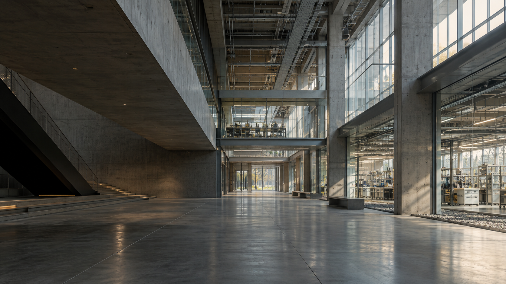
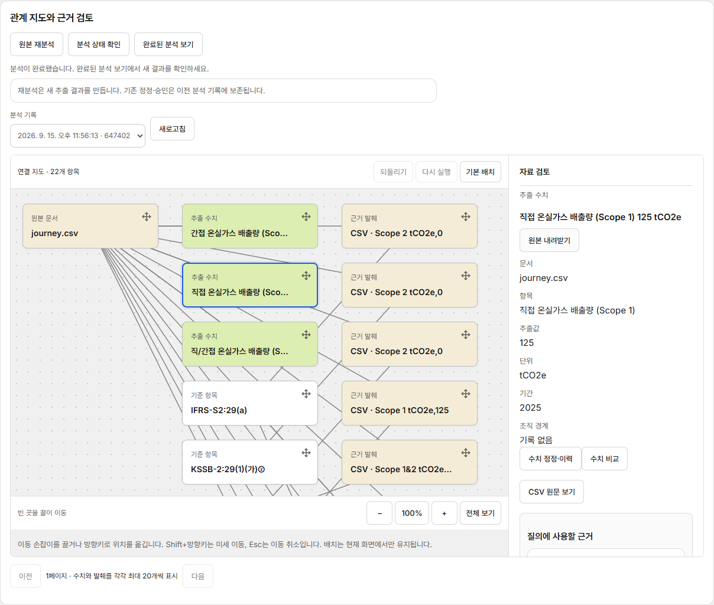
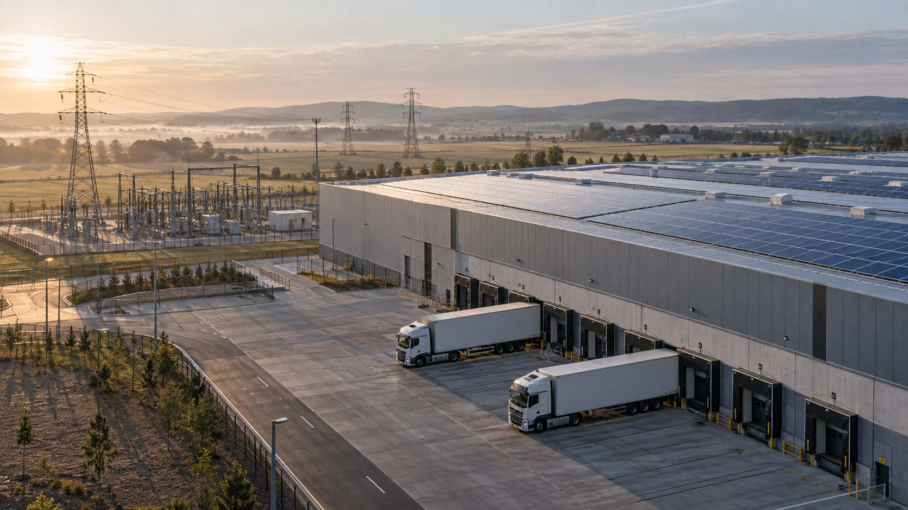

숫자에서,
그 숫자의 출처로.
보고서의 한 줄에서 원본 자료와 계산 과정까지.
검토할 때 필요한 근거를 함께 살펴봅니다.

지속가능성 관련 위험 및 기회,
그 판단의 근거를 연결합니다.
숫자가 어디에서 왔는지.
어떤 조건에서 내린 판단인지.
다음 담당자가 무엇을 확인해야 하는지.
ESGOLOGY는 자료와 현장의 판단 이유를 연결해,
다음 업무에서도 꺼내 쓸 수 있는
기업의 지식으로 남기는 일을 설계합니다.
보고서의 한 줄에서 원본 자료와 계산 과정까지.
검토할 때 필요한 근거를 함께 살펴봅니다.
사업장마다 다른 조건과 현장의 예외.
결론에 이른 이유와 적용 범위를 남깁니다.
검토한 내용과 아직 확인할 일을 구분합니다.
담당자가 바뀌어도 그 맥락을 이어갈 수 있도록.
지속가능성 관련 재무정보의 근거를 확인하고,
검토 내용과 정정 이력을 남기는 업무 공간.

자료의 출처와 이전 검토 맥락을 한 흐름에서 확인하는 업무를 설계합니다.
고객의 자료와 파트너의 방법론을 구분하면서, 필요한 검토 맥락을 이어갑니다.
확인한 범위와 미해결 과제, 다시 검토할 조건을 함께 살펴봅니다.
